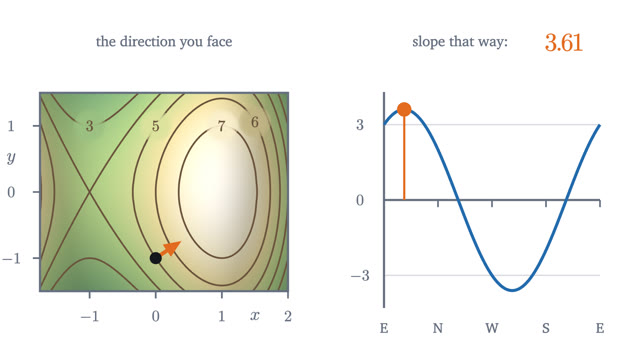
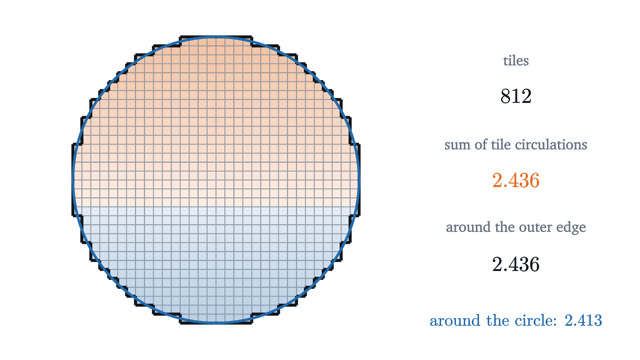

Multivariable Calculus
Surfaces, gradients, multiple integrals and vector fields.
Calculus again, for functions of two inputs. The first two lessons give the pictures: surfaces, contour maps and the gradient. Lagrange multipliers use the gradient to optimize along a curve. Double integrals extend area to volume, and the final two lessons on vector fields lead to Green's theorem, which ties the derivative and the integral together as the fundamental theorem did in one variable.
Start with lesson 1-
1
Surfaces and contour maps: functions of two variablesA hiking map shows a mountain on flat paper. Its contour lines are the level sets of a function of two variables, and their spacing measures steepness.

-
2
The gradient: which way is uphill?On a hillside the slope depends on the direction you face. Partial derivatives give two of those slopes, and the gradient packs all of them into one arrow.

-
3
Lagrange multipliers: the best point on a pathThe highest point of a trail is where the trail just touches a contour line. There the gradients of the height and of the constraint are parallel.

-
4
Double integrals: volume under a surfaceVolume under a surface is a limit of sums of thin columns. Slicing turns it into two ordinary integrals, and polar coordinates handle round regions.

-
5
Divergence and curl: reading a vector fieldTwo numbers at each point of a flow. Divergence is the net outflow from a tiny square per unit area, and curl is the circulation around it per unit area.

-
6
Green's theorem: the inside read from the boundaryA walk around the edge of a region, adding up a vector field along the way, equals the integral of the field's curl over the inside. Here is why.
